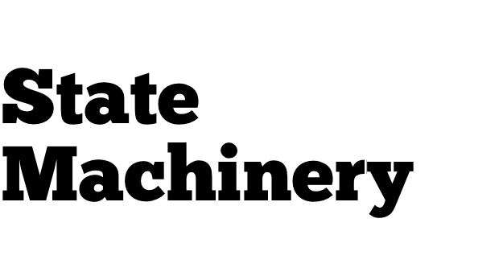

Perfect and upright, eschews evil.
By trade, I tell computers what to do. I make apps, I build products, I throw events. I think about people, urbanism, housing, the internet, and living a good life. I live in Toronto.
You can find me on mastodon, and on instagram. Reach me by email via phillmv at okayfail dot com.
You can find an archive of my writing here. Follow along using the rss feed.
Before the pandemic, fully remote work was rare but now it's rapidly expanding. If lots of workers stand to earn good, tech-industry salaries while living outside of tech-industry hubs, could this lead to more gentrification?
If scores of landlords become insolvent due to the global pandemic, we should bail them out directly – and nationalize their assets. We could greatly expand the social housing stock, and use it to protect tenants and the homeless.
Rent controls are criticized for acting as a severe disincentive to new and existing rental construction. In this paper, I documented contemporary Canadian housing policy initiatives and investigated the theoretical and empirical record of rent controls in other jurisdictions. I then argue that rent controls' most important aspect is their regulation of the provision of security of tenure — which should be seen as a right of tenants as well as homeowners.
An op-ed summary of my paper on why rent control is good, which was published in the Toronto Star.
When you next walk through the residential streets of Toronto's west end, take a look at the houses around you. Before long, you'll see the azulejos.
Let's talk about the Queen, shall we? Elizabeth Alexandra Mary has been the Queen of Canada and fourteen other countries since 1952. She is now ninety years old, and she's not getting any younger.
From 2015 to late 2017, I was a cofounder of Appcanary. We tracked security vulnerabilities in open source code and notified our customers when they had to take action.
We got into Y Combinator, we raised money, we built a product, we built a small team, we got customers, we wrote content marketing and published a podcast, we monitored hundreds of servers and thousands of apps. Alas, the market wasn't quite what we thought it was, and we ended up being acquired by GitHub.
It was an interesting time! You can find out more via our company blog.
Established in 2014, with a few co-conspirators, I organize and throw a regularly occurring storytelling night for Toronto tech workers. We produce a podcast, and a whole bunch of people show up. You should check it out.
Until early 2015, I was a cofounder of State Machinery, a security and development consultancy. We opened for business in November, 2012. We performed security audits, penetration tests, built mvps and advised teams on how to improve their software practice.
In February 2013, we built Gemcanary, a tool for monitoring known security disclosures in Rails/Bundler enabled applications on Github. I wrote a little bit more about it on the State Machinery blog. It eventually led to Appcanary.
Back in January 2012, I created an app for an dance party art installation. I combined the instagram api with some javascript and it was a lot of fun.
In July 2011, I put together an eight month time lapse of the front page of the nytimes.com. I wrote a time lapse tutorial, and I also happened to capture the front page of the bbc. It got a lot of attention, and it was pretty neat.
In lieu of course work, prior to graduating I wrote an undergraduate thesis on applying a naïve bayesian classifier to rss feeds.